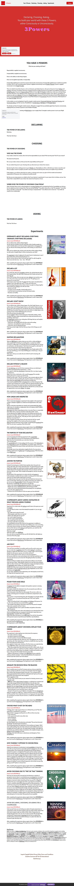

3 Powers on Strikingly
Responsibility is applied consciousness.
Irresponsibility is applied unconsciousness.
Power is the ability to make things happen.
Power can be applied responsibly or irresponsibly.
Irresponsibly applied power cannot be conscious because the consciousness of irresponsibly applied power would be too painful to endure. This is a self-correcting system. If power is applied unconsciously it serves Shadow Purposes. If power is applied consciously it serves Bright Principles.
There are indeed many kinds of power, such as wind power, gravitational power, solar power, the power of your feelings and emotions, the power of evolution, the power of money, the power of Gaia, the power of nonviolent noncompliance, the power of navigating space, the power of going nonlinear, the power of your Box and Gremlin to defend your status quo and keep things the same, the power of your Being to evolve, and the power of your life energy feeds whatever voice, demon, commitment, or purpose you give your attention to, the power of Bright Principles, the power of the Earth Coincidence Control Office (E.C.C.O.), the power of your Archetypal Lineage, the power of your Pearl, the power of Commitment, the power of Conscious Will, the power of your Point Of Origin, and so on.
In this website, we are investigating 3 specific energetic creation powers: Consciously Declaring, Consciously Choosing, and Consciously Asking, and their uses by a Possibilitator to Cavitate Space, Hold Space, and Navigate Space.
You already use these 3 energetic creation powers, although we suggest that you probably apply these 3 powers unconsciously, implying that you use these 3 powers to serve Shadow Principles.
Your exploration and experimenting will Build Matrix in you to apply these 3 energetic creation powers to serve your Bright Principles.